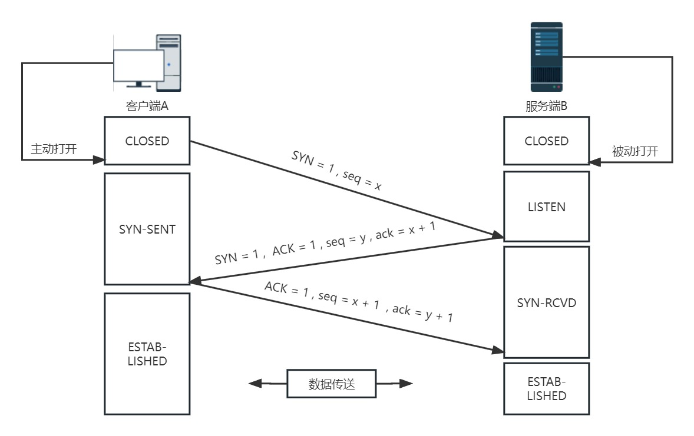
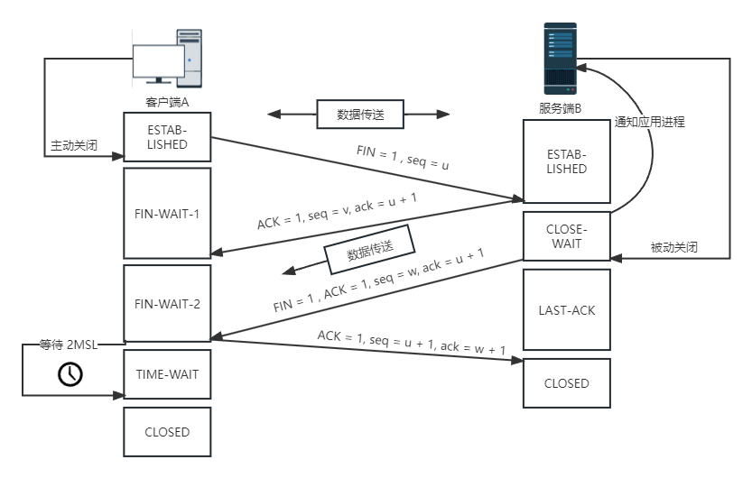

TCP
TCP
TCP通过检验和、序列号、确认应答、重发控制、连接管理以及窗口控制等机制实现可靠性传输。
三次握手

第一次握手（SYN = 1 ,seq = x）
- 客户端发送一个 TCP的 SYN 标志位置1的包，指明客户端打算连接的服务器的端口，并选择序号 seq=x，表明传送数据时的第一个数据字节的序号是 x。(seq是个随机值)。
- 发送完毕后，客户端进入 SYN_SEND 状态。
第二次握手(SYN = 1, ACK = 1, seq = y, ack = x + 1)
- 服务器的TCP收到连接请求报文段后，如同意，则发回确认包(ACK)应答。即 SYN 标志位和 ACK 标志位均为1。服务器端选择自己 ISN 序列号(随机值y)，放到seq 域里，同时将确认序号ack设置为客户的 ISN 加1，即 x+1(即回复对方确认收到了序列号为x开始的包，且希望下次的数据从x+1的位置开始)。
- 发送完毕后，服务器端进入 SYN_RCVD 状态。
- 第三次握手(ACK = 1，ack = y + 1，seq = x + 1)
- 客户端收到此报文段后再次发送确认包(ACK)，SYN 标志位为0，ACK 标志位为1，并且把服务器发来 ACK 的序号字段+1，放在确定字段ack中发送给对方，并且告诉服务器自己的seq=x+1。
- 发送完毕后，客户端进入 ESTABLISHED 状态，当服务器端接收到这个包时，也进入 ESTABLISHED 状态，TCP握手结束。
四次挥手

第一次挥手(FIN=1，seq=u)
假设客户端想要关闭连接，客户端发送一个FIN标志位置为 1 的包，表示自己已经没有数据可以发送了，但是仍然可以接受数据。因为有可能服务器还要发送数据，所以发送自己的序列号seq=u，等待服务器确认。
发送完毕后，客户端进入FIN_WAIT_1状态。
第二次挥手(ACK=1，seq=v，ack=u+1)
服务器端确认客户端的FIN包，发送一个确认包(ACK=1(确认)，seq=v(自己的序列号)，ack=u+1(确认收到序列号u以前的包，并希望下次发送数据从 u+1 开始))，表明自己接受到了客户端关闭连接的请求，但还没有准备好关闭连接(可能有数据发送)。
发送完毕后，服务器端进入CLOSE_WAIT状态，客户端接收到这个确认包之后，进入FIN_WAIT_2状态，等待服务器端关闭连接。
在这过程中 TCP 服务器进程会通知高层应用进程。然后从客户端到服务器这个方向的连接就释放了，TCP 连接处于半关闭状态。但是服务器 若发送数据，客户端仍要接收。
第三次挥手(FIN=1，ACK=1，seq=w，ack=u+1)
若服务器已经没有要向客户端发送的数据，其应用进程就通知 TCP 释放连接。
服务器端准备好关闭连接时，向客户端发送结束连接请求FIN置为 1，ACK=1，seq=w(有数据发送过)，ack=u+1。
发送完毕后，服务器端进入LAST_ACK状态，等待来自客户端的最后一个ACK。
第四次挥手(ACK=1，seq=u+1，ack=w+1)
- 客户端接收到来自服务器端的关闭请求，发送一个确认包(在确认报文段中ACK=1，确认号ack=w+1，自己的序号seq=u+1)，并进入TIME_WAIT状态，等待可能出现的要求重传的ACK包。(这个确认包是内核进行发送的，上面不能发数据的是客户端的send函数)。
- 服务器端接收到这个确认包之后，关闭连接，进入CLOSED状态。
- 客户端等待了某个固定时间（两个最大段生命周期，2MSL，2 Maximum Segment Lifetime）之后，没有收到服务器端的ACK，认为服务器端已经正常关闭连接，于是自己也关闭连接，进入CLOSED状态。
本博客所有文章除特别声明外，均采用 CC BY-SA 4.0 协议 ，转载请注明出处！